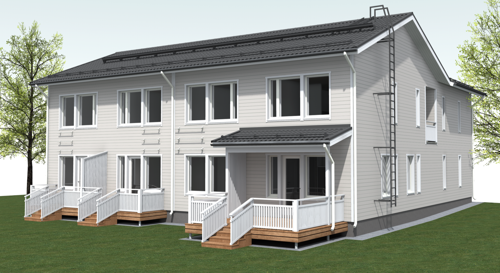

LAMMINPÄÄN MÄNTYVAARA - MUKAVAA JA HELPPOA ASUMISTA!
YLÖJÄRVENTIE 29 33420 TAMPERE
Vuokrakoteja 1h + kt, osassa asunnoista oma eteläpiha ja terassi.
RAKENNUSTOIMENPIDE: Luhtitalo 349m2, 9 asuntoa
AIKATAULU: Heinäkuu 2016 - toukokuu 2017
RAKENNUTTAJA: Kiinteistöyhtymä Talonen & Ruokonen puh. 040-510 7400
VASTAAVA TYÖNJOHTAJA / PÄÄSUUNNITTELIJA: Jarkko Haavisto, RKM, puh. 050-411 7430
ARK-RAKENNUSSUUNNITTELIJA: Jussi Palomäki, RI (AMK), puh. 040-824 2906 Suomen Kodikas-Talot Oy
Lamminpään ensimmäisten tonttien joukossa jo 1940-luvulla kaavoitettu Mäntyvaara-niminen tontti saa nyt historiansa ensimmäisen asuinrakennuksen. Paikalle rakennetaan yhdeksän asunnon luhtitalo.
Vuokrattavissa on 30 m2 yksiöitä. Rakentamisessa panostetaan laadukkaan talotekniikan ohella viihtyisään asumiseen.
Asuntojen suunnittelussa on kiinnitetty huomiota siihen, että koteihin saadaan mahdollisimman avaraa tilaa ilman turhia hukkaneliöitä. Näin kompaktit neliöt ovat mahdollisimman hyvin käytössä sisustamista ja asumista varten.
Asumisviihtyvyyttä luovat mm.
- maalämpö vesikiertoisella lattialämmityksellä
- parketti tai laminaattilattiat
- laadukas keittiö kodinkoneineen: induktioliesi, erillisuuni ja astianpesukone
- kauttaaltaan laatoitetut wc ja pesuhuoneet
- kylpyhuoneissa paikka ja liitännät valmiina pesukoneelle
- vaaleat pintamateriaalit
- osassa asunnoista oma terassi ja piha
- asunnot aukeavat vehreälle ja aurinkoiselle pihan puolelle lounaan suuntaan
- pihassa lämmityspistokkeellisia autopaikkoja
- koneellinen tulo- ja poistoilmanvaihto lämmön talteenotolla takaavat raikkaan sisäilman
Missä kohde sijaitsee?
Lamminpään Mäntyvaara sijaitsee Tampereen Lamminpäässä, josta on hyvät yhteydet niin Tampereen keskustaan kuin noin kilometrin päähän Tampereen Lielahden ostoskeskittymään. Bussit kulkevat talon edestä. Lähikauppa palvelee klo 23 saakka tien toisella puolella juuri sopivasti lähes vastapäätä taloa. Mediapolis sijaitsee 2,7 kilometrin päässä.
Milloin kohde valmistuu?
Asuntojen arvioitu valmistumisaika on toukokuussa 2017.
Vuokra
Yläkerran asunnot 560 €, alakerran asunnot (terassi ja piha) 590 € / kk
Vesi 20 € / kk
Autopaikka lämpöpistokkeella saatavissa 15 € / kk
Vuokra sisältää laajakaistayhteyden.
Takuuvuokra on kahden kuukauden suuruinen.